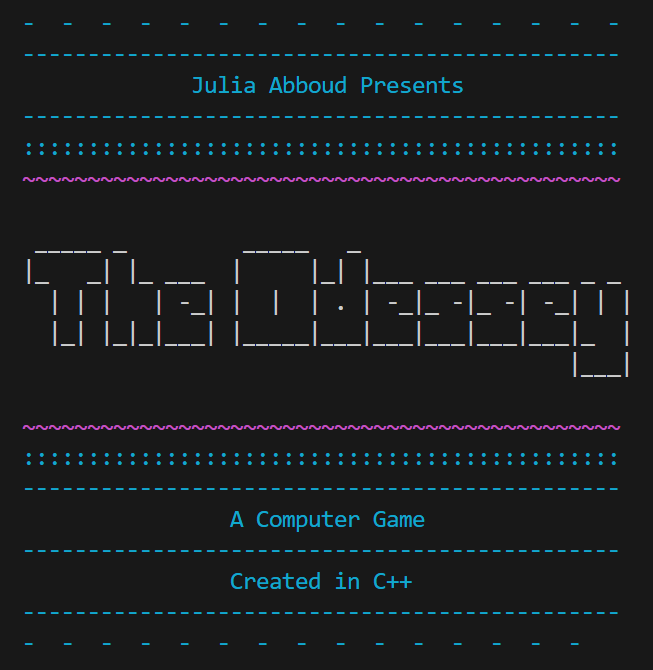
:)APR 2024
The culmination of my Intro to Computer Science course was an individual project that challenged me to code a 2-player game loosely based on the story of Homer's Odyssey. This class was taught in C++ and was my first experience coding! I quickly discovered an excitement for the problem-solving elements of the homework questions and projects throughout the semester. This final project pushed me to create something I was incredibly proud of, changed my perception of coding for the better, and greatly improved my coding skills!
Requirements for this project aimed to combine everything I had learned that semester, targeting printing, if statements, for loops, functions, arrays, structs, classes, importing/exporting data, and more! While going above and beyond the rubric, I decided to personalize the game and make it more fun! After a few weeks of work, I ended up with 3000+ lines of code spread over 16 different files (.cpp, .h, .txt) and a game that included unique characters, deadly battles, mystery potions, and even cheat codes!
Game Description
"This project implements a 2-player, interactive board game vaguely based on Homer's Odyssey. The users play the role of heroes in a race across the sea, attempting to survive numerous challenges and beat each other to the finish line. As they traverse, the players are subject to calamities, special feature tiles, encounter shops, and fight enemies randomly scattered throughout the ocean. The goal of the game is to be the first player to make it to the end and also to survive all the journey's troubles. Look out for easter eggs scattered throughout gameplay and enjoy!"
The game begins by welcoming players and allowing them to select their characters, each coming with different stats and equipment. Choices besides the listed character names are invalid and request the user to try again (except for "Julia," a secret overpowered character in the game). Player 2 also cannot choose the same character as Player 1.
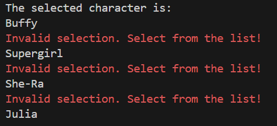
There is a map feature representing the players racing across the sea. On their turns, players can choose to move forward and this is reflected on the map.
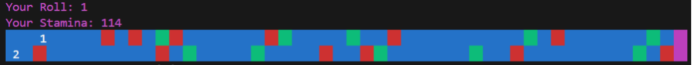
Ocean
A blue tile randomly results in being poisoned, diseased, or pushed back. Ailments deduct from the player's health each turn.
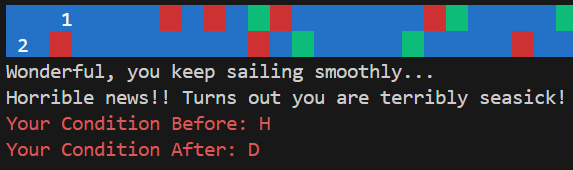
Special
Landing on a red tile prompts the player to answer a riddle which they receive gold for answering correctly.
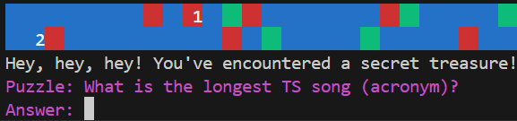
Island
A green tile initiates a combat sequence with an enemy. The reward for winning is gold, a shop visit, and moving past the tile.
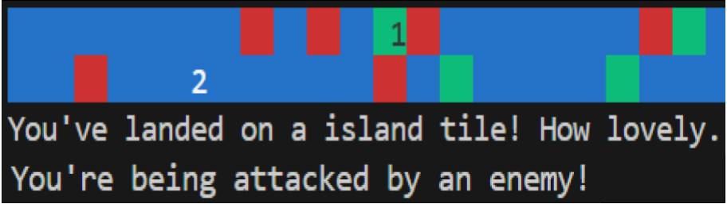
Combat with an enemy gives players the option to attack, use a potion, switch weapons, or attempt to run away. Attacks between players and enemies are randomized with success rates and damage. Additionally, there are 4 different elements that players/enemies can have strengths or weaknesses in, which affect damage. Elements are associated with each character and weapon. Attempting to run from battle is randomized to be successful, and if so, pushes the player a tile back from the Island on the map (they have to go through it eventually). Unsuccessful running keeps the player in battle. The battle ends once an opponent's health drops to 0hp. Defeating the enemy grants gold and access to an item shop. Being defeated ends the game and declares the other player the winner.
A player's gold is displayed at the shop, and they can purchase up to 1 weapon and 1 potion, if they can afford it. Inputting anything other than the items listed prompts for a reentry. Trying to buy more than 1 weapon or potion is denied and prompts the player to leave the shop.
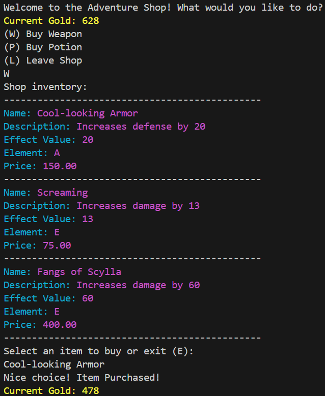
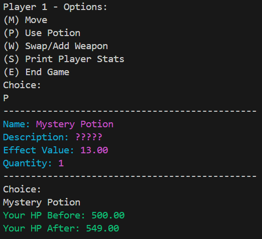
During their turn, players can choose to use potions bought (and they will disappear from inventory) or swap weapons/equipment (they can have 2 items at a time). Potions, like weapons, each have different effects, including healing poison or disease status picked up from Ocean tiles. The Mystery Potion ranges from healing you fully to killing you instantly.
If both players land on green tiles at the same location and time, it triggers an Epic combat sequence featuring 1 of 3 boss enemies. Players alternate turns, making the same choices as in regular combat, and both lose health on attacks. If one player dies, they both lose the game.
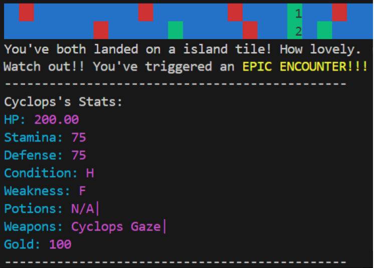
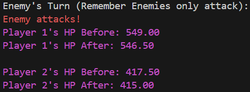
The game ends when someone makes it to the end of the map first, a player dies (0 hp), or a player chooses to end the game. These result in different endings, the main one declaring a victor and displaying both players' stats at the end of the game. Finally, this data is exported into a .txt file that can be saved or downloaded.
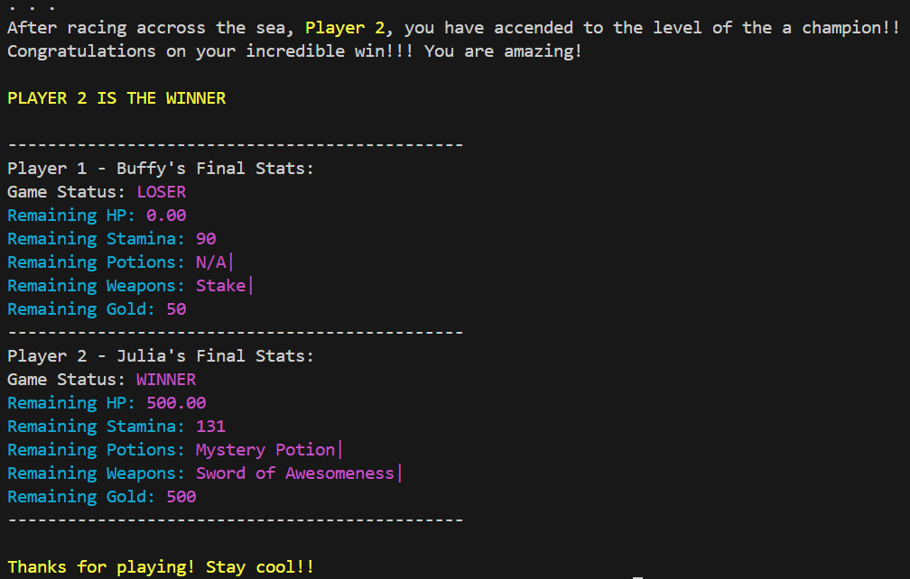
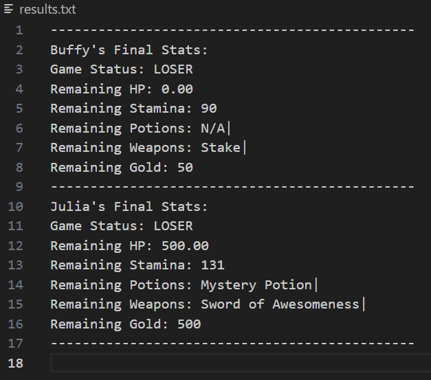